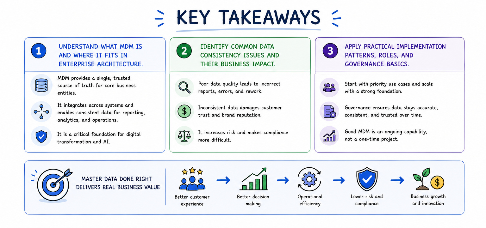

Dashboard
Course Introduction
Welcome to Master Data Management
This course takes you from first principles to a working implementation of Master Data Management. You'll learn how Master Data Management solves real business problems across systems like ERP, CRM, eCommerce, finance, and HR.
Why this matters
When core records do not match across systems, the impact shows up fast: pricing errors, inconsistent reporting, and hidden compliance gaps. Master Data Management creates one trusted version of your most important data so every team works from the same source.

Modules in this course
- 01 Master Data Basics
- 02 Types of Master Data
- 03 Managing Master Data
- 04 Master Data Management Key Roles
- 05 Implementation Styles
- 06 Master Data Management Tools & Landscape
- 07 Best Practices
- 08 Master Data Management Maturity
- 09 Implementing Master Data Management
- 10 Future Trends
- 11 Q&A & Interview Prep
By the end, you'll understand what Master Data Management is, why it matters, and how to put it into practice across the business.